In the last lesson, we learned that it can be difficult to clearly communicate instructions to other humans. Imagine how difficult it would be to communicate instructions to a computer, one that has no ability to “read between the lines.”
Instead, we’ll have to do the extra work to make sure the computer can understand what we want, rather than what we say.
Today is a big day. We’re going to get our first taste of what programming looks like, and we’ll see different ways we can use these tools to communicate our instructions to a computer.
Everything’s better with a friend! That’s true with programming, just as it is in life.
Let’s take a quick look at what pair programming looks like before we try it ourselves.
Manipulates the keyboard and the mouse.
Keeps track of the big picture. Guides towards the goal.
Swap frequently: every level on code.org.
Set up a team with your partner:
In the top right corner, click your name.
Click “Pair Programming.”
Choose your partner’s name.
Alternate driver and navigator roles each level.
Make sure to Run and click Finish when you complete each level. This gives the navigator a copy of your work too.
For each stage, you and your partner should:
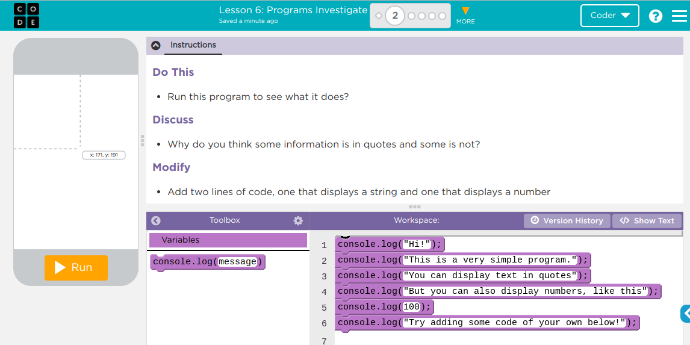
Program Statement: a command or instruction. Sometimes also called a code statement.
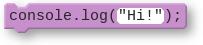
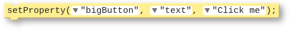
Program: a collection of program statements. Programs run (or “execute”) one command at a time.
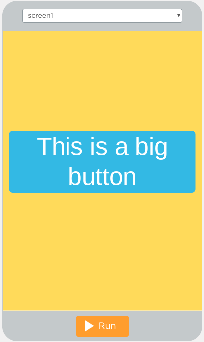
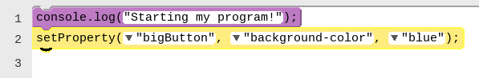
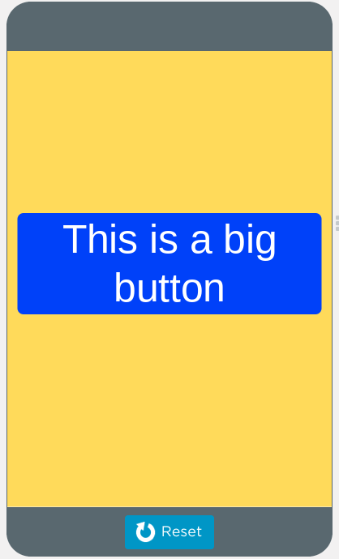
Sequential Programming
Event-Driven Programming
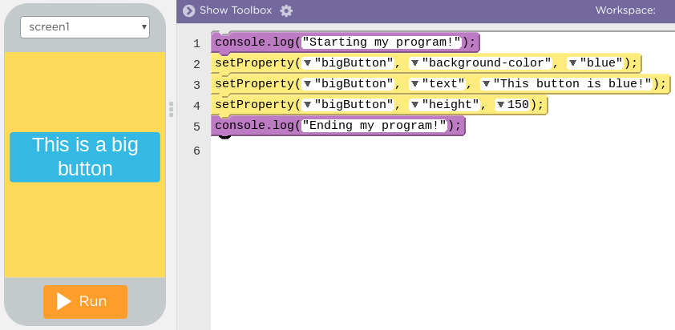
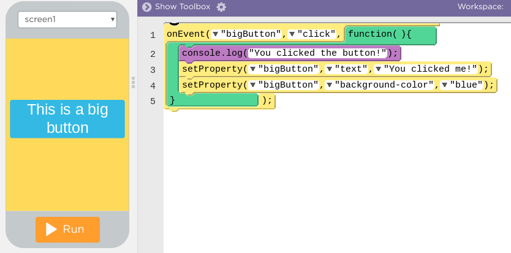
When you mix sequential and event-driven programming, things can get confusing fast.
Here’s the app we’ll use. When we click the Run button, what color will the screen be?
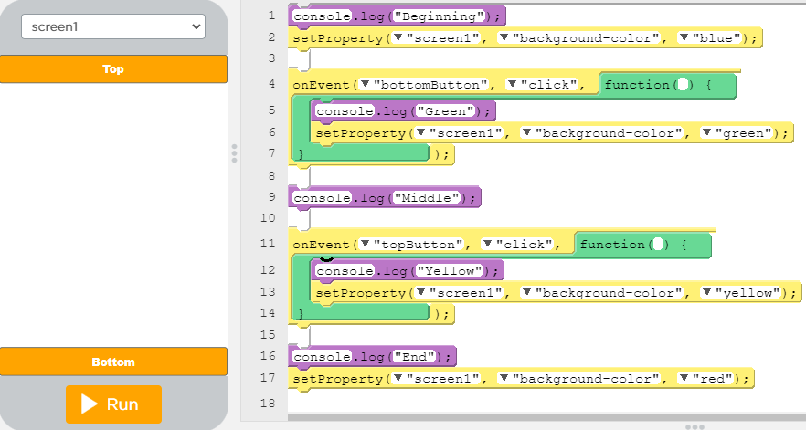
Click the screenshot to view the full program.
With the same program shown above, what will print out on the console when you click the Run button?
Think about your experiences in this lesson and the previous lesson. How is a programming language different from natural language?